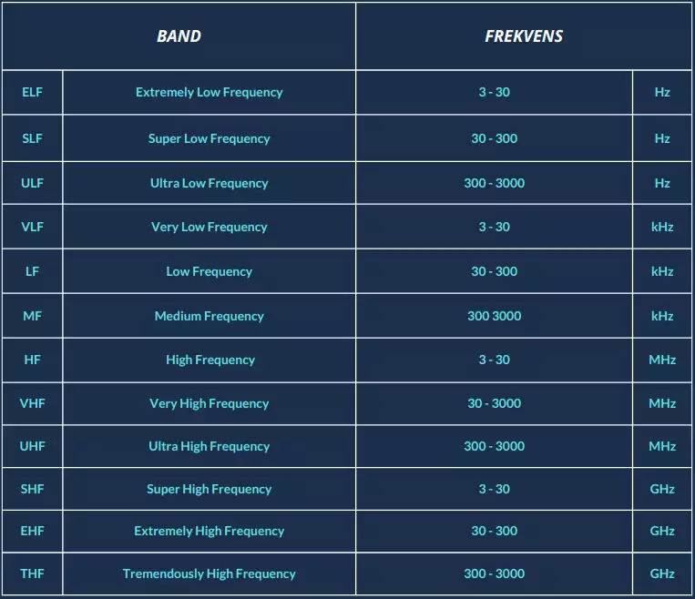
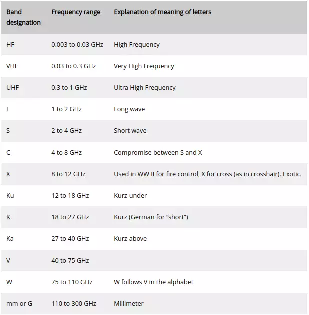
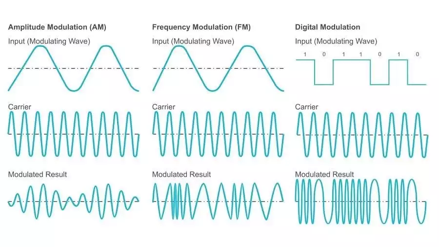
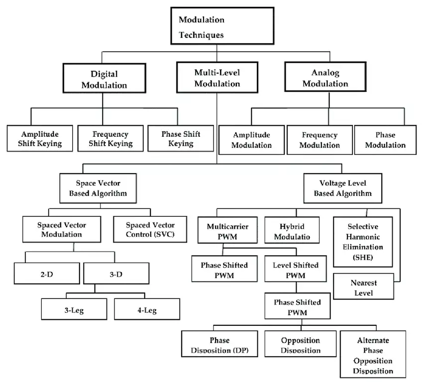
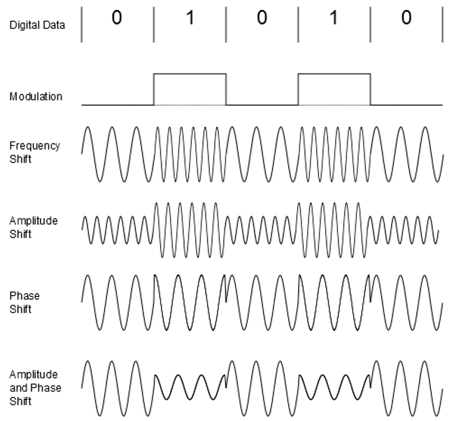
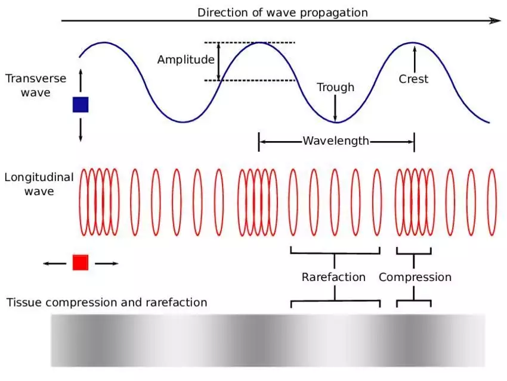
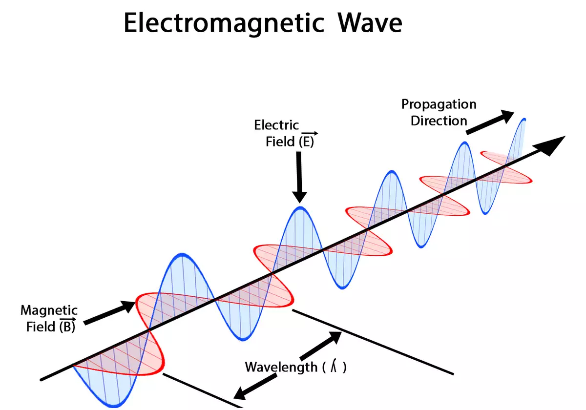
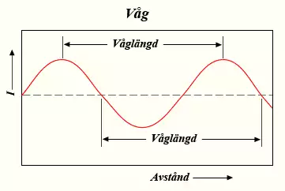
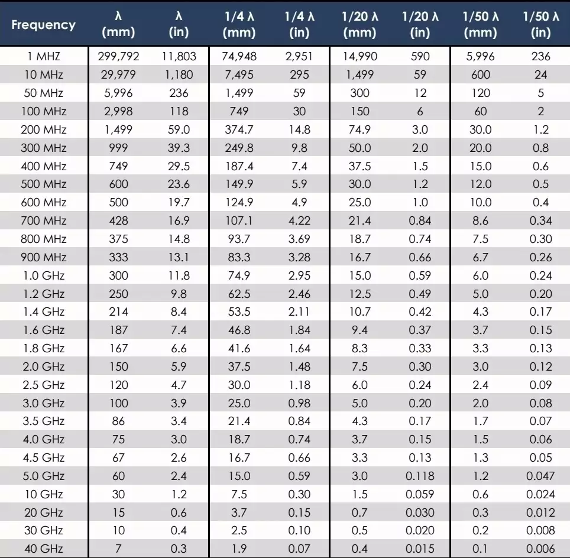

Radio och dess egenskaper kan lätt ses som svart magi. Här försöker vi göra det mer lättförståeligt och tillgängligt. Vi börjar med själva radion, därefter modulering, frekvenser och vågor/våglängder.
RADIO
Radio är trådlös överföring av signaler genom modulering av elektromagnetiska vågor med frekvenser lägre än det synliga ljusets. För vårt syfte handlar det om en sändare som genererar energi genom en antenn, som i sin tur ger en elektromagnetisk vågrörelse.
Vanligtvis sker utsändningen i syfte att nå så många mottagare som möjligt genom att antennen strålar ut åt alla håll, s.k. rundradio.
Radiolänk uppnås med s.k. riktade antenner (riktantenner) vilket är vanligt förekommande på telemasterna som står utplacerade i landet. Där skickas bland annat TV- och mobiltelefonsignaler mellan masterna via radiolänk. På så sätt kan signaler som normalt sätt inte har en lång räckvidd färdas över stora sträckor.
Radio mellan två stationer som både är sändare och mottagare (sändtagare) kallar vi trafikradio, radiotelefoni eller kommunikationsradio.
SÄNDNINGSLÄGEN
Hur den elektromagnetiska strålningen sänds och hur kommunikationen mellan två eller fler sändare/mottagare sker varierar. Dels mellan analoga och digitala signaler, samt sändningsmod.
-
SIMPLEX
Här sker kommunikationen bara i en riktning, mellan en sändare (transmitter) och mottagare (reciever). Rundradio och TV-sändningar. -
HALV-DUPLEX
Kommunikation kan ske åt båda håll mellan två eller fler sändtagare, men bara ett håll åt gången. Komradion. -
DUPLEX
Kommunikation sker här åt två håll samtidigt, exempelvis när du pratar mobiltelefon.
Komradion, aka. tvåvägsradio/transciever/sändtagare kan man först och främst skilja på mellan halv-duplex och duplex. Jaktradion eller ungarnas walkie talkie* är exempel på halv-duplex, likaså babymonitorn och en ra180. Det innebär kort att kommunikation bara kan ske i en riktning åt gången
Med duplex kan kommunikation ske i båda riktningar samtidigt. Din mobiltelefon är ett sånt exempel.
Rundradio och tv-sändningar är simplex, där sker kommunikationen bara i en riktning, mellan en sändare (transmitter) och mottagare (reciever**).
*Huruvida walkie talkien klassas som tvåvägsradio är ett kaninhål jag ej går ner i här. För vårt ändamål säger vi så.
** Jmf. Transciever och sändtagare
VÅGFORM
-
ANALOG
Enklare och generellt billigare. Enklare inlärningskurva, men några nackdelar är mer störningsbenägen, ingen kryptering och sämre bandbredd. -
DIGITAL
Utöver möjlighet till högre bandbredder och mindre störningsbenägenhet, även fler funktioner såsom kryptering, meddelanden, privatsamtal, kontaktlista, funktioner för radiolänk etc. Således även dyrare och kräver mer i form av upplärning.
RAKEL
Vi kan inte prata komradio utan att nämna statligt ägda RAKEL (RAdioKommunikation för Effektiv Ledning). Används av (ej uttömmande) alla samhällsviktiga funktioner, myndigheter och företag. Det är ett digitalt system med möjlighet till en mängd finesser typ end 2 end-kryptering (E2EE), uppkoppling mot mobilnät etc.
God täckning över i princip hela landet och nätverksinfrastrukturen gör att terminalerna kan vara långt ifrån varandra geografiskt. Fungerar givetvis terminal till terminal i lägen då man ej har kontakt med basstation.
Norge och Finland nyttjar samma teknik (Tetra) som dock beräknas avvecklas i slutet av 20-talet, till förmån för ett nytt system, byggt på 3GPP.
ENHETER
Det finns en uppsjö olika tillverkare, modeller och varianter av kommunikationsradioenheter. Allt ifrån billiga Baofeng till dyrare high-end-märken likt Motorola, Sepura och Icom. För militärt bruk kan nämnas Harris och Elbit Systems.
-
HANDHÅLLEN
Lätt att stuva undan eller montera på buren utrustning. Lägre uteffekt, generellt 5W, kortare antenn samt oftast i VHF/UHF-banden gör den till primärt LOS (Line-of-Sight) mellan 1 - 10 km. Batteridriven. -
MOBIL
Högre uteffekt parat med längre antenner (kan monteras på mast) ökar räckvidden avsevärt. Sker sändningarna på VHF/UHF begränsas dock räckvidden fortfarande av LOS. För HF-banden däremot kan du få signalen studsa i jonosfären vilket möjliggör mer eller mindre global kommunikation. Batteridriven och/eller nätdrift. -
STATIONÄR Precis som en mobil enhet kännetecknas dessa av möjlighet till längre antenner och högre uteffekt. En stationär radio kan givetvis ha än större antenninstallationer än en mobil radio. Dessa apparater kan paras med förstärkare och kräver således mer ström, varför dessa primärt förses med nätdrift. Storleken på dessa radioapparater behöver inte vara större än en mobil enhet, men dess utformning är inte designad med mobilitet i första hand.
Det ena alternativet är inte nödvändigtvis bättre eller sämre än det andra, utan beror på en uppsjö faktorer kopplade till vad du för stunden/uppdraget vill uppnå. Är hög uteffekt nödvändigt om kommunikation bara kommer ske korträckviddigt? Hur stor är risken för fientlig EW-verksamhet? Hur ser terrängen ut?
⚠️ OAVSETT TYP (DIGITAL/ANALOG, KRYPTERAD/OKRYPTERAD, FREKVENSBAND ETC.) KOMMER RADION EMITTERA STRÅLNING SOM ÄR MER ELLER MINDRE LÄTT FÖR EN FIENDE ATT UPPTÄCKA.
FREKVENS
Frekvens mäts i hertz (Hz) och beskriver antalet händelser, eller svängningar per sekund.
Radiofrekvenser sträcker sig upp till 300,000,000,000 svängningar per sekund, men av praktiska skäl kallar vi det 300 Gigahertz.
| Kilo | k- | 1000 |
| Mega | M- | 1 000 000 |
| Giga | G- | 1 000 000 000 |
SI-enheter |
ℹ️ 1 HZ ÄR EN SVÄNGNING PER SEKUND.
FREKVENS OCH VÅGLÄNGD
Frekvens och våglängd är omvänt relaterade till varandra. Det betyder att en hög frekvens har en kortare våglängd än en låg frekvens.
-
Hög frekvens - kort våglängd
-
Låg frekvens - lång våglängd
Frekvens och energi är direkt relaterade.
-
Hög frekvens - hög energi
-
Låg frekvens - låg energi
FREKVENSBAND
Internationellt är frekvensbanden indelade enligt bilden nedanför av FN-organet ITU.

Frekvensbanden enligt ITU.
Detta överlappar med andra indelningar, bland andra IEEE:s.

Frekvensbanden enligt IEEE.
Det finns ingen fysikalisk anledning till varför indelningen ser ut som den gör, men vågutbredning, typ av antenn och dess storlek är exempel på saker att ta hänsyn till vid ändrad frekvens.
De olika frekvensbanden lämpar sig således bättre eller sämre till olika tillämpningar och applikationer.
FREKVENSPLAN
Eftersom all radiokommunikation sker på modulerade bärvågor så kan man kan skapa en frekvensplan.
I Sverige är det Post & Telestyrelsen som planerar, bestämmer och utfärdar sändningstillstånd.
På deras hemsida kan man ladda ner frekvensplanen samt söka och filtrera efter frekvenser i deras sökmotor.

Post & Telestyrelsens frekvensplan.
Vissa frekvenser är undantagna från tillståndsplikt, vilket innebär att “en del radiosändare behöver du inte ha tillstånd för att använda”.
Vilka sändare och frekvenser det rör sig om är viktigt att kontrollera, då det fortfarande finns begränsningar och tekniska specifikationer att ta hänsyn till.
Allt detta finns att läsa om i Post- och Telestyrelsens författningssamling. Den ska du läsa innan du köper en Baofeng.
AVLYSSNING
Det är helt tillåtet att lyssna av radiommunikation i sverige, men man får inte spela in, återberätta eller på annat sätt vidarebefordra det man hör.
Det är ej heller tillåtet att på något sätt störa telekommunikation. I Sverige är innehav av störsändare olagligt.
MODULERING
Allt vi sänder; våran röst eller data, moduleras. Det innebär att en signal ändrar karaktären på en annan signal.
Det går att likna vid att vi fäster ett papper på en sten, för att på så sätt få iväg pappret längre när vi kastar.
Moduleringsteknik i olika former tillämpas i princip för all form av kommunikationsöverföring.
SYFTE
Den mänskliga rösten ligger, för en kvinna omkring 165 - 255 Hz och för en man mellan 85 - 155 Hz. Våra öron uppfattar ljud mellan 20 - 20000 Hz.
Dessa frekvenser har - eftersom våglängden är omvänt relaterad till frekvensen - väldigt stora våglängder.
Storleken på en antenn beror på just radiovågens längd. Alltså skulle det behövas orimligt långa antenner. Tänk kilometer.
En annan anledning till modulering är att vi då kan välja den bäst lämpade frekvensen för vår sändning och skapa en frekvensplan - alternativet vore att våra sändningar skulle krocka och störa ut varandra.
Det tillkommer givetvis fler anledningar, ex. sändareffekter och multiplex - tekniken att sända fler bärvågor på samma kanal.
MODULERINGSFORMER
-
AMPLITUDMODULERING (AM) Meddelandesignalen ändrar bärvågens amplitud (styrka) medans frekvensen är densamma.
-
FREKVENSMODULERING (FM) Meddelandesignalen ändrar bärvågens frekvens, medans amplituden är densamma.

En bärvåg ändrar karaktären på en meddelandesignal.
Frekvens-, amplitud- och fasmodulering är endast ett litet urval av alla olika tekniker som finns. Olika former kan kombineras med varandra och används till olika syften, baserat på tekniska och ekonomiska faktorer.

Olika tekniker att modulera en signal
A/D
Vi skiljer på digital och analog modulering.
En analog signal har ett min-, maxvärde att förhålla sig till, med hela skalan däremellan.
En digital signal däremot är bara giltig som på eller av. En etta eller en nolla.
En analog signal, ex. en röst, kan omvandlas till digital via en A/D-converter. En fördel med digital radio är att bara 1 och 0 är giltiga, alla andra värden (bruset) elimineras, till skillnad från en analog signal där bruset finns kvar - något vi kan höra som störningar.

Digitala moduleringsformer
PRINCIPEN
-
SÄNDARE
Vi talar in i radions mikrofon, våran röst är meddelandesignalen. Den går via radions modulator, där den mixas med bärvågen. Resultatet blir en modulerad signal som sedan strålas ut via antennen. -
MOTTAGARE Antennen på mottagande radio fångar upp radiovågorna (den modulerade signalen) på inställd frekvens. Mottagande radio demodulerar signalen, dvs. frigör meddelandesignalen från bärvågen. Vi kan då höra det ursprungliga meddelandet.
Så för att återgå till exemplet med ett papper fäst på en sten.
Vi (sändaren) fäster (modulerar) vårt papper (meddelandesignalen) på stenen (bärvågen)och kastar iväg det.
Mottagaren (recievern) lossar pappret (demodulerar) och kan åter läsa meddelandet.
GENERELLT OM AM/FM
AM lämpar sig bättre för tal och - beroende på frekvensbandet - för sändningar över längre avstånd, pga. att vi kan få signalerna att studsa i atmosfären.
Amplitudmoduleringen medför dock att störningsbenägenheten ökar till följd av fenomen såsom bl.a. åska och elektromagnetiska fält kring kraftledningar.
FM-radio sänds på VHF-bandet vilket gör sändningarna till primärt LOS (Line-Of-Sight); förbi horisonten försvinner signalen.
Sändningsavstånden bestäms dock inte av vilken moduleringform vi använder, det styrs (bl.a.) av frekvensbanden och atmosfäriska fenomen kopplade till dessa; vissa våglängder studsar i jonosfären medans andra bara passerar ut i rymden.
VÅGOR
En våg är en energiöverföring från en punkt till en annan utan nån direkt masstransport, dvs. partiklarna i rymden/mediet där vågen fortplantar sig förflyttas ej permanent.
Vågor kan vara:
-
MEKANISKA
Mekaniska vågor utbreder sig genom ett medium och substansen i detta medium deformeras. Ljudvågor är mekaniska - eller longitudinella vågor. -
ELEKTROMAGNETISKA Består av periodiska svängningar i elektriska och magnetiska fält som genereras av laddade partiklar, och kan därför färdas genom ett vakuum. Elektromagnetiska vågor kan vi även kalla transversella vågor. Exempel på transversalvågor är radiovågor, ljus och strängar på ett instrument.

Transversella och longitudinella vågor
RELATIONER
Våglängd och frekvens är omvänt relaterade.
- Hög frekvens - kort våglängd
- Låg frekvens - lång våglängd
Våglängd och energi är också omvänt relaterade.
- Kort våglängd - hög energi
- Lång våglängd - låg energi
ELEKTROMAGNETISK VÅG
En elektromagnetisk våg består av ett elektriskt och ett magnetiskt fält som rör sig med - eller nära - ljusets hastighet.
Denna vågrörelse kallar vi strålning.
En del elektromagnetisk strålning är s.k. joniserande strålning, till skillnad från radiovågor som är icke-joniserande. Joniserande strålning har högre energi än icke-joniserande. Båda kan orsaka skador.
Joniserande strålning har frekvenser och våglängder i området exa-/petahertz och piko-/nanometer och benämns bl.a. UV-, X- och Y-strålning.
ℹ️ EN VÅG KARAKTÄRISERAS AV DESS VÅGLÄNGD, FREKVENS OCH AMPLITUD.
POLARISERING
Det hörs på namnet elektromagnetisk att strålningen har dels ett elektriskt fält och dels ett magnetiskt fält.
Dessa fält är vinkelrätt orienterade mot varandra.

Linjär vertikal polarisering
Beroende på hur fälten är riktade får vi olika polarisering.
LINJÄR POLARISERING
Linjär polarisering delas in i två typer:
-
Vertikal polarisering - vertikalt elektriskt fält
-
Horisontell polarisering - horisontellt elektriskt fält
CIRKULÄR POLARISERING
Vid cirkulär polarisering vrider sig det polariserade planet som en skruv runt riktningsaxeln.
Cirkulär polarisering kan vara högercirkulär eller vänstercirkulär.
För radiovågor är det främst linjär polarisering som används, med undantag för viss satellitkommunikation eller i fall där signalen måste ta sig igenom svår terräng, då cirkulär polarisering kan användas; tänk korkskruv som penetrerar terrängen.
Skall tilläggas angående cirkulär polarisering dock, att det numer är frekvent förekommande i drönarvärlden, inte minst vid FPV-flygning.
Anledningen är (bl.a.) att den cirkulärt polariserade signalen alltid “överlappar”, oavsett grad av akrobatik under flygningen. Alltså, oavsett antennernas förhållande till varandra kommer signalen träffa antennen och utnyttjas till fullo, till skillnad från en linjärt polariserad radiovåg, som bara “attackerar” i ett plan; fel attackvinkel och signalförlust uppstår.
VIKTEN AV RÄTT POLARISERING
Vilken polarisering en utsignal från en radiosändare får beror på val av antenn och hur den monteras; liggande eller stående.
Genom att varva olika polariseringar kan man nyttja frekvensspektret mer effektivt och placera sändare närmre varandra i frekvens utan att de stör varandra.
Viktigt är att montera både sändar- och mottagarantennen på samma sätt, annars kan man få en utsläckning av signalen. Jämför förlusterna vi får när en antenn vinklas eller böjs i en båge över ett fordon - DETTA SPELAR ROLL.
VÅGLÄNGD
Med våglängd menas avståndet mellan två motsvarande punkter i exempelvis en radiovåg. Helt enkelt; när vågen börjar om på samma ställe.

En våg och dess längd
Elektromagnetisk strålning färdas med - eller nära - ljusets hastighet (299 792 458 m/s), så för radiovågor ger det oss formeln:
λ = c/f
-
λ - Våglängd
-
c - Ljusets hastighet (~300,000 kilometer/sekund)
-
f - Frekvens, mätt i MHz
300 / Frekvens (i MHz) = våglängd (i meter)
300 / 100 = 3. Frekvensen 100 MHz har alltså en våglängd på 3 meter.

Ett händigt diagram med frekvenser och dess våglängder.
ℹ️ VÅGLÄNGDEN ÄR RELEVANT DÅ DET AVGÖR LÄNGDEN PÅ EN ANTENN OCH DÅ ÄVEN DESS EFFEKTIVITET.